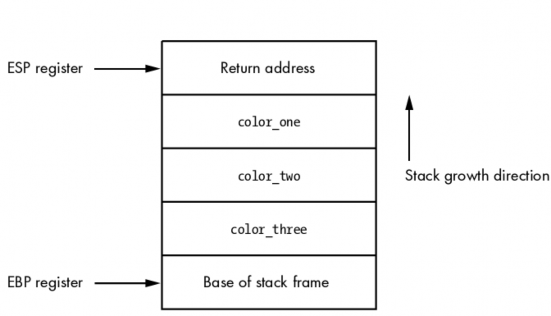
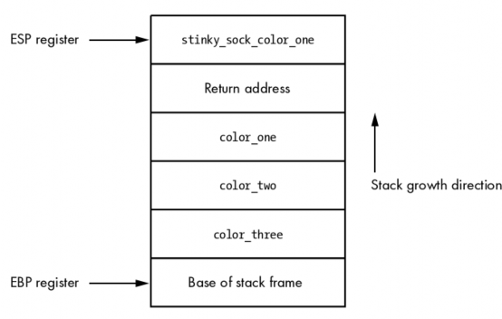

2.2 栈
在开发调试器的时候，栈是一个非常重要的结构。栈存储了与函数调用相关的各种信息， 包括函数的参数和函数执行完成后返回的方法。 ESP 负责跟踪栈顶，EBP 负责跟踪栈底。 栈从内存的高地址像低地址增长。让我们用前面编写的函数 my_sock()作为例子讲解栈是如 何工作的。
Function Call in C
int my_socks(color_one, color_two, color_three);
Function Call in x86 Assembly
push color_three
push color_two
push color_one
call my_socks
栈框架的结构将如图 2-1。

图 2-1: my_socks() 函数调用的栈结构
如你所见，这是一个非常简单的数据结构，同时也是所有程序中函数调用的基础。当 my_sock()函数返回的时候，它会弹出栈里所有的参数（返回地址弹到 EIP），然后跳到返回 地址(Return address)指向的地方（父函数的代码段）继续执行。另一个需要考虑的概念就是 本地函数。把我们的 my_socks()函数扩展一点，让我们假定函数被调用后做的第一件事就是 申请一个字符串数组，将参数 color_one 复制到数组里。代码应该像这样：
int my_socks(color_one, color_)
{
char stinky_sock_color_on[10];
...
}
函数将在棧里申请 stinky_sock_color_on 变量的空间，以便在栈里调用（当然会随着函 数的执行完毕而释放，不过在函数内部访问时，效率会高很多）。申请成功以后，堆栈的结 构将像图 2-2 看到的这样。

Figure 2-2: 在 stinky_sock_color_one 申请后的栈框架
现在你到了本地函数是如何在棧里申请的以及栈指针是如何不断的增长指向栈顶 的。调试器对堆栈结构的捕捉能力是相当有用的，特别是在我们捕捉程序崩溃，跟踪调查基 于栈的缓冲区溢出的时候。